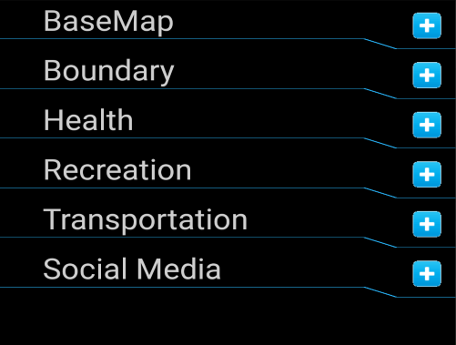

Quick start:
Please read the disclaimer before continuing.
Before we start, here are two terms that are frequently used.
Feature: is a collection of geometries (point, line, polygon) that can be displayed on a map.
Geometry: is the individual point, line, or polygon that makes up a feature.
The initial load will be slow, please be patient.When the app starts for the first time, you will be presented by the feature drawer grouped by categories.

-tap a category to expand.
-tap the feature(s) you wish to display on the map.
-close the drawer by taping the top left corner (application icon) , swipe from the center of the screen towards the left edge of the screen or tap the layer button.
-the map will then load the selected feature(s).
-to open the feature drawer again, tap the top left corner (application icon), swipe from left edge of the screen towards the center or the layer button.
For point features, tap the marker to display information dialog.
For polygon features (eg. boundaries) tap anywhere within the polygon to display information dialog.
Note: Some features are only visible at certain zoom levels. If you had selected a feature and it's not being displayed, try zoom in or zoom out. For example: Bus stop feature will only be visible when zoomed in.